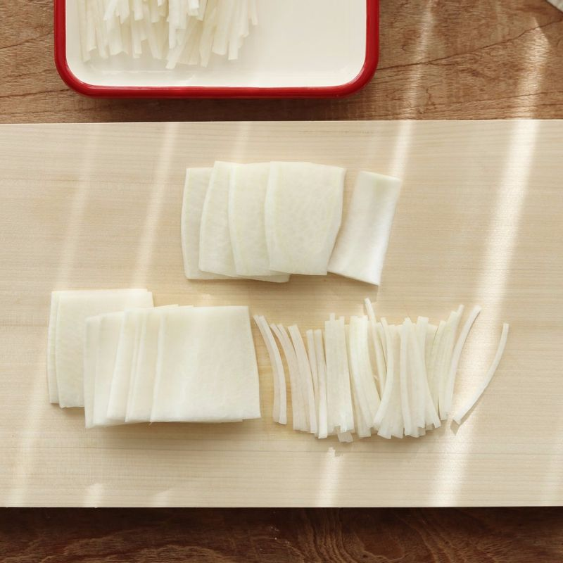
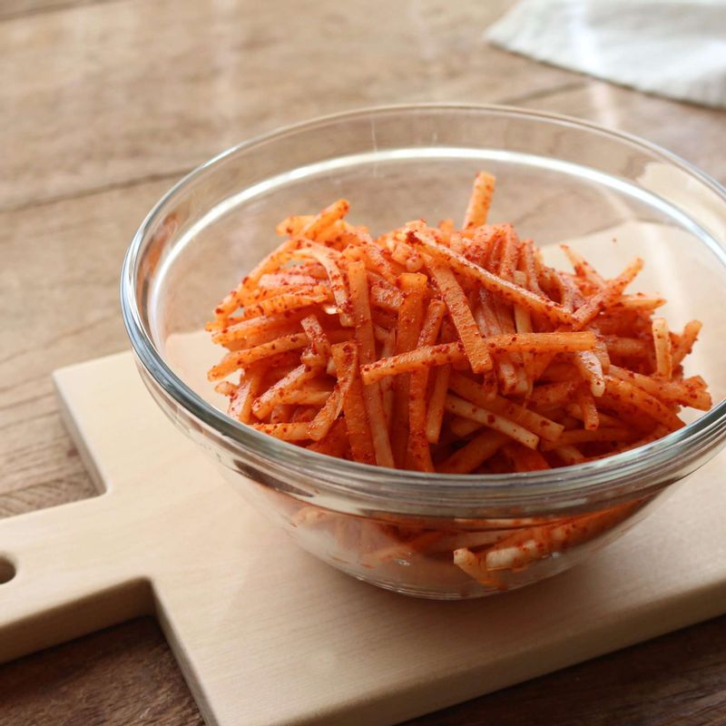
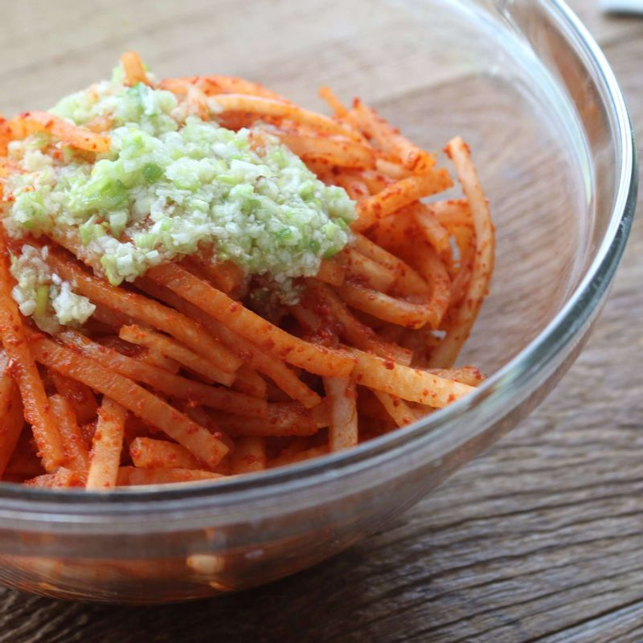
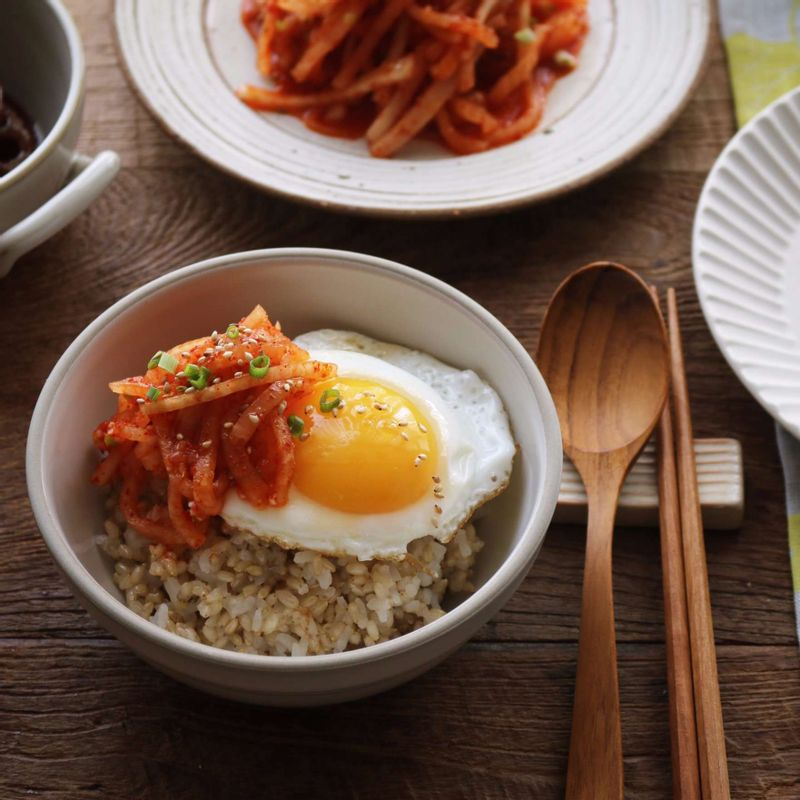

-

무는 껍질을 벗기고, 7센치 정도 길이로 썰어주세요. 토막낸 무를 세워 동그란면이 위로 향하게 놓고, 0.3센치 정도 두께로 편을 썰어주세요. 편으로 썬 무를 결방향으로 놓고 채썰어 주세요. (결방향으로 썰면 무채가 끊어지지 않는답니다.)
-

볼에 무채와 고춧가루를 넣고 버무려 10분 정도 고춧가루물을 들여주세요.
-

고춧가루에 물들인 무채에 양념재료를 넣고 조물조물 버무려주세요.
-

접시에 무생채를 담고, 송송 썬 실파와 통깨를 뿌려주세요.